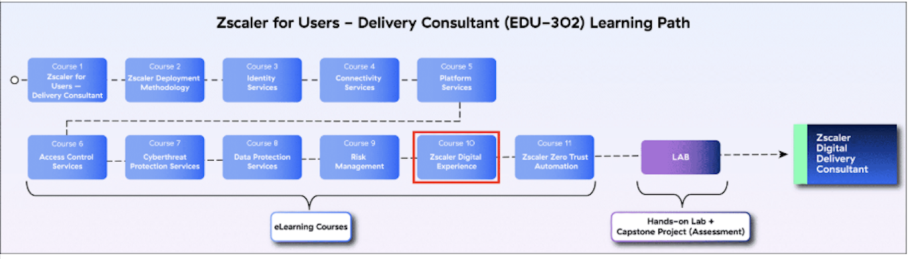
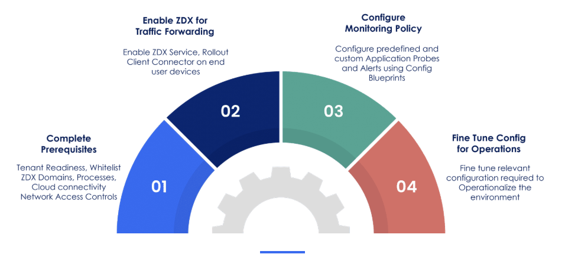
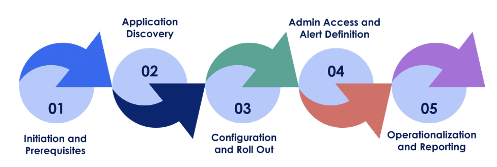
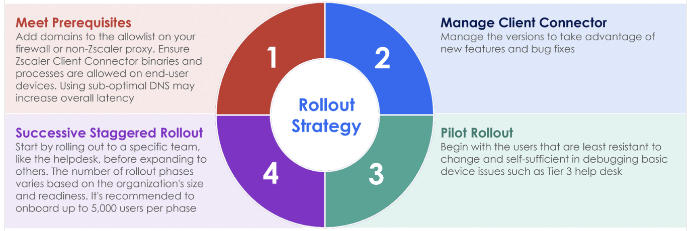
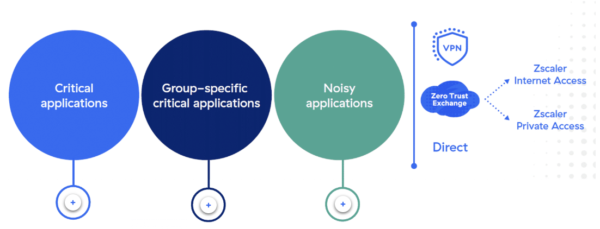
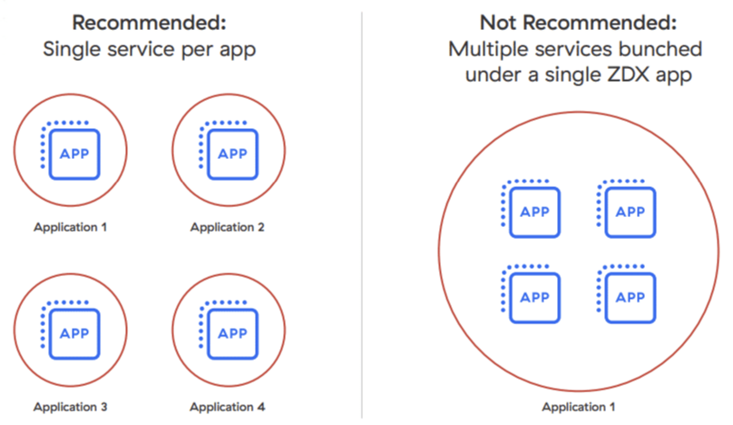
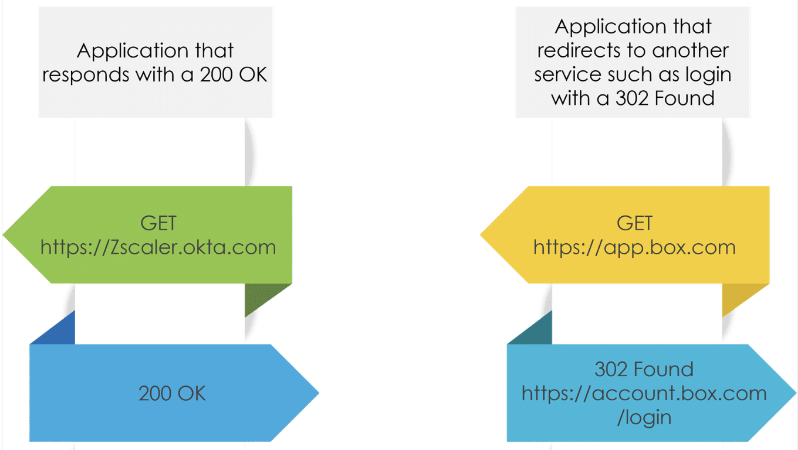
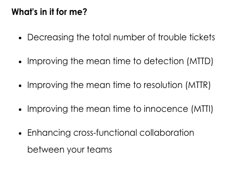
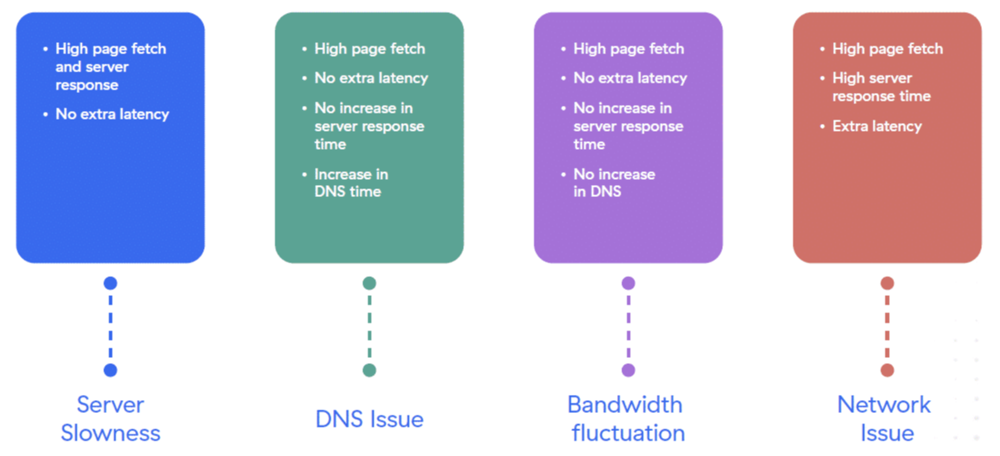
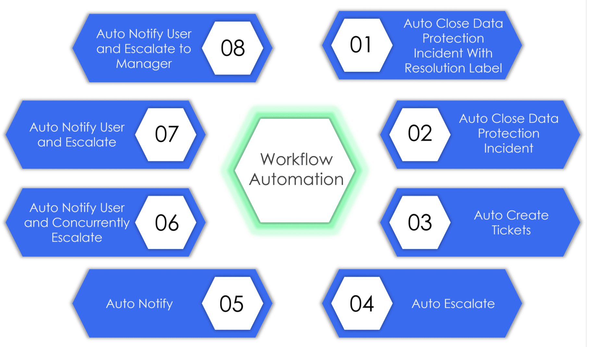

ZDX deployment methodology, application strategy (30-probe limit, three app categories), probe and alert best practices, the three-level troubleshooting workflow (MTTD · MTTR · MTTI), and Workflow Automation integration with ITSM tools.
ZDX doesn't just tell you the network is slow — it tells you which layer made it slow and whose team should fix it.
Monitoring is only valuable when it narrows the problem to a responsible owner before the blame-game starts. ZDX's power is in translating raw telemetry into a differential diagnosis: device, Wi-Fi, ISP, Zscaler, or application.
💭THINK FIRST · ZDX OVERVIEW
ZDX monitors end-to-end digital experience — from the device, through the network, through the Zscaler Zero Trust Exchange, all the way to the destination application. It collects telemetry at every hop. The question it answers isn't "is the network up?" but "why does this user feel slowness, and where exactly is it coming from?"
Traditional network monitoring tools have existed for decades. What specifically does ZDX provide that a combination of Ping, Traceroute, and an APM tool cannot?
ZDX requires Zscaler Client Connector to collect endpoint telemetry. What does that dependency imply about when ZDX can and cannot be deployed?
ZDX is described as monitoring application performance, network performance, endpoint device health, and UCaaS quality. Why is combining all four into one tool important — what breaks when they're separate?
Q1 — MODEL ANSWER
Ping and Traceroute measure network reachability; APM measures application response times. Neither knows the user's device state, nor can they correlate a slow DNS lookup with a concurrent CPU spike on the endpoint. ZDX runs all measurements from inside the client, correlates them with ZTE cloud telemetry, and surfaces a unified ZDX Score per user per application — so you can compare one user's experience against their department's baseline and against the global average simultaneously.
Q2 — MODEL ANSWER
ZDX depends on Client Connector because that's the agent that runs probes from the user's device and reports back device health metrics (CPU, memory, Wi-Fi signal). This means ZDX can't monitor unmanaged devices or environments where the Client Connector can't be deployed — it's a managed-endpoint-first solution. The flip side is that for organisations already running ZIA or ZPA with Client Connector, ZDX requires no new agent deployment.
Q3 — MODEL ANSWER
When tools are siloed, teams argue during an incident. Network says "our infrastructure is fine," App says "our backend latency is normal," and the desktop team says "the endpoint is clean." ZDX breaks the deadlock by correlating all four layers in a single timeline, letting you see that the network hops were normal but the user's Wi-Fi jitter spiked at exactly the moment the UCaaS call dropped. Correlation across layers is the key — not monitoring any one layer more deeply.
SECTION 1 · INTRODUCTION TO ZDX
What is Zscaler Digital Experience?
Zscaler Digital Experience (ZDX) is a digital experience monitoring solution that provides end-to-end visibility into application performance and user experience. It correlates data from every hop — the endpoint device, the local network, the Zero Trust Exchange, and the destination application — into a single ZDX Score per user per app.

EDU-302 learning path — ZDX (Section 10) sits in the final stretch before the Capstone Project and certification.
Six Course Sections
1
Introduction to ZDX
Purpose, key features, and benefits of ZDX. ZDX's role in enhancing user digital experience through monitoring and troubleshooting.
2
ZDX Deployment & Best Practices
Early ZDX service activation via Client Connector, pilot group rollout, best practices for Operationalizing ZDX, Probes & Alerts.
3
Level 1: Troubleshooting User Experience Issues
Proactively resolving global, regional, or office-wide issues at Level 1.
4
Level 2: Troubleshooting User Experience Issues
Reactive troubleshooting for escalated, individual user issues.
5
Level 3: Troubleshooting User Experience Issues
Steps to resolve highly escalated tickets using deep trace analysis.
6
ZDX Workflow Automation
Automating management and resolution of Data Protection incidents, Business Insights events, and ZDX alerts through ITSM integration.
Four Monitoring Domains
Endpoint Monitoring
Device health metrics: CPU, memory, disk I/O, battery level, Wi-Fi signal strength, and interface bandwidth — collected directly from the user's device by the Client Connector agent.
Network Monitoring
Cloud Path probes trace latency and packet loss through every network hop, from the device to the Zscaler node to the destination. Identifies ISP or egress bottlenecks.
Application Monitoring
Web probes measure page fetch time, DNS resolution time, and availability. Catches server-side slowness and DNS failures independently of network conditions.
UCaaS Monitoring
Call Quality applications use ZDX Score as the primary metric, weighted heavily by jitter — because real-time audio/video is uniquely sensitive to latency variance, not just average latency.
🧠
MENTAL NOTE
ZDX requires Zscaler Client Connector — no agent, no endpoint telemetry. Its architecture has two key components: the Telemetry and Policy Gateway (TPG) and the ZDX Analytics Engine. The four monitoring domains are: Endpoint · Network (Cloud Path) · Application (Web Probe) · UCaaS. ZDX admin RBAC and user authentication inherit from ZIA.
Analogy
ZDX is like a flight data recorder combined with a live air traffic control dashboard. Every aircraft (user device) has its own black box recording altitude, airspeed, and engine health (endpoint metrics). The control tower (ZDX Analytics Engine) collects all those streams simultaneously, correlates them with weather data (network conditions) and runway status (application health), and spots that one flight's rough approach wasn't turbulence — it was a faulty altimeter (Wi-Fi chip issue). Without the combined view, each ground crew blames someone else's department.
📷 A1.png — add this image to the folder
Flat minimalist cartoon illustration split into two panels. Left panel: a cheerful small aircraft with a visible black box recorder glowing, showing tiny gauges for speed, altitude, battery, and Wi-Fi signal. Right panel: a calm air traffic controller at a curved desk with four monitors — one showing a map of aircraft paths (network), one showing a digital health chart (endpoint), one showing a weather screen (app performance), one showing a call quality waveform (UCaaS). The controller has a calm expression and circles one anomalous blip on the network screen. Clean isometric-lite style, soft blues and whites, no text labels, educational infographic feel, modern tech-analogy aesthetic.
ASK A QUESTION
ADD A NOTE
💭THINK FIRST · DEPLOYMENT METHODOLOGY
ZDX deployment has two parallel frameworks: a four-step activation sequence (Prerequisites → Enable → Configure Monitoring → Fine Tune) and a five-phase methodology ending with Operationalization. These aren't the same thing — activation gets the service running; operationalization gets teams actually using the data.
The five-phase ZDX methodology ends with "Operationalization and Reporting." Why is operationalization listed as a separate final phase rather than being part of deployment configuration?
ZDX recommends starting with a pilot group of users who are "least resistant to change and efficient in debugging basic device issues." Why does the pilot user profile matter so much for a monitoring-only tool that doesn't change traffic forwarding?
Admin RBAC and user authentication are described as being "inherited from ZIA" during rollout. What's the operational benefit of this design, and what's the risk if an org's ZIA user list is outdated?
Q1 — MODEL ANSWER
Configuration gets the probes running and the data flowing — that's a technical deliverable. Operationalization is about turning that data into habitual workflows: the help desk knows to check ZDX before opening a network ticket, alerts are tuned to reduce noise, dashboards are shared with the right stakeholders, and reports go to the CISO weekly. Without an explicit operationalization phase, monitoring tools collect data that nobody acts on — they become expensive dashboards rather than incident-reduction tools.
Q2 — MODEL ANSWER
Even though ZDX doesn't forward traffic, the Client Connector running probes adds CPU and memory overhead on the device, and the probes themselves can generate load on monitored applications (especially privately hosted ones). Starting with technically proficient users means they can distinguish a ZDX probe artifact from a genuine performance issue and report accurately. It also ensures that early alert configurations get validated by people who understand what they're seeing, so the alerts are well-tuned before the less technical majority is onboarded.
Q3 — MODEL ANSWER
Inheriting from ZIA eliminates duplicate provisioning — you don't need a separate ZDX identity store, so user onboarding and offboarding stays in one system. The risk is that if ZIA's user list has stale accounts (former employees, service accounts), those accounts will appear in ZDX with whatever RBAC they inherited. A deployment checklist should include auditing the ZIA user list before enabling ZDX to prevent ghost accounts from appearing in monitoring dashboards or receiving alert notifications.
SECTION 2 · ZDX DEPLOYMENT & BEST PRACTICES
Deploying ZDX: Methodology & Rollout Strategy
ZDX deployment follows a structured approach. The four-step activation sequence gets the service live; the five-phase methodology covers the full lifecycle from prerequisites to long-term operationalization.
ZDX Deployment Sequence (4 Steps)

ZDX Deployment Sequence — four parallel steps that run roughly in order, with fine-tuning continuing after the initial go-live.
Step 2 — Enable ZDX for Traffic Forwarding: Enable ZDX Service, roll out Client Connector to end user devices with ZDX enabled.
Step 3 — Configure Monitoring Policy: Configure predefined and custom Application Probes and Alerts using Config Blueprints.
Step 4 — Fine Tune Config for Operations: Fine-tune relevant configuration to operationalize the environment — alert thresholds, RBAC, reporting.
ZDX Deployment Methodology (5 Phases)

Five-phase ZDX methodology — phases overlap; configuration and alert definition begin while the pilot rollout is in progress.
Rollout Strategy
Although ZDX does not make any forwarding decisions or change configurations on end user devices, a staggered rollout is still recommended to prevent any unexpected performance impact from probing overhead and to validate alert accuracy before wide deployment.

Staggered rollout strategy — start with a technically capable pilot group, validate, then expand in successive phases of up to 5,000 users per phase.
💡
PILOT GROUP SELECTION
Choose users who are least resistant to change and efficient in debugging basic device issues (e.g. Tier 1 help desk, IT team). They can give accurate feedback on probe overhead and distinguish ZDX measurement artifacts from genuine performance issues.
🧠
MENTAL NOTE
4-step deployment sequence: Prerequisites → Enable ZDX (ZIA + Client Connector) → Configure Monitoring Policy → Fine Tune for Operations. 5-phase methodology ends with Operationalization & Reporting. Staggered rollout: pilot → successive phases up to 5,000 users per phase. Admin RBAC and user authentication are inherited from ZIA.
Analogy
ZDX rollout is like opening a new hospital wing's patient monitoring system. You don't connect all 500 patient beds on day one. You start with the ICU (the pilot group — most technically capable), run every alarm, verify the nurses' station receives the right notifications, tune the thresholds so minor fluctuations don't trigger false alarms, and only then expand to the general wards. Skipping the pilot phase doesn't save time — it costs it, because you end up tuning 500 badly-calibrated monitors simultaneously while patients (users) are complaining.
📷 A2.png — add this image to the folder
Flat minimalist cartoon illustration of a hospital monitoring system rollout analogy. Wide scene split into four sections from left to right: (1) an engineer installing a single bedside monitor in a small ICU room with one attentive nurse checking readouts — labelled "Pilot"; (2) the nurse and engineer reviewing a glowing dashboard, adjusting a dial — labelled "Tune"; (3) two more monitor-filled rooms being activated with cheerful staff — labelled "Expand Phase 1"; (4) a full ward of monitors all glowing green with a satisfied manager giving a thumbs up — labelled "Full Rollout". Clean line art, warm blues and whites, small friendly characters, no text labels, educational infographic feel, modern tech-analogy aesthetic.
ASK A QUESTION
ADD A NOTE
💭THINK FIRST · APPLICATION STRATEGY & PROBES
ZDX limits each user to 30 active probes simultaneously. This ceiling forces deliberate choices about what to monitor — not everything can be watched at once. How you organize applications and configure probes directly determines the quality and completeness of the monitoring data you'll have when an incident occurs.
Given a 30-probe-per-user limit, a typical enterprise might have hundreds of apps. How would you prioritize which 30 slots to use, and how would you structure them across Critical, Group-specific, and Noisy categories?
ZDX recommends "single service per app" — e.g., SAP Americas and SAP Europe as separate ZDX apps rather than one. What specific measurement problem does bundling multiple services under one ZDX app create?
A Web Probe on an app that redirects unauthenticated requests to a login page (302 Found) should measure availability based on the redirect, not a 200 OK. Why would measuring for 200 OK give misleading availability data in this case?
Q1 — MODEL ANSWER
Use the three-category framework: Critical apps (e.g. Office 365, Okta) run for all users and consume the majority of slots. Group-specific critical apps (e.g. Azure for Operations, Salesforce for Sales) only run for users in those groups, so they don't burn slots for the broader population. Noisy apps — those with known variability unrelated to ZDX infrastructure — are allocated their own separate slots and not mixed with critical apps so their variability doesn't distort the ZDX Score. Direct (non-ZTE) and VPN apps also get their own probe category.
Q2 — MODEL ANSWER
When multiple services share one ZDX app, performance trends are averaged across all of them. A degradation in SAP Europe gets diluted by healthy performance from SAP Americas, and the ZDX Score stays green while European users are suffering. Single-service-per-app gives you clean, isolatable trend data: you can see exactly which service instance degraded, when it degraded, and whether it's recovering — without the noise from healthy instances masking the problem.
Q3 — MODEL ANSWER
If you probe for 200 OK and the app redirects to a login service, the probe is actually measuring the login service's availability, not the original app. The login service could return 200 OK even if the app's own backend is completely down. You'd report the app as "available" when it isn't. Measuring for the 302 redirect ensures you're testing whether the original service endpoint is reachable and responding as designed — not whether something downstream of it is alive.
ZDX is limited to 30 probes per user at any time. This isn't a technical constraint to work around — it's a design boundary that forces deliberate decisions about what's actually worth monitoring continuously.
Three Application Categories

The three usage-based categories for organising ZDX probe allocation — each category maps to a different probe strategy and audience scope.
Critical Applications
Applications that are critical for the entire organisation (e.g. Office 365, Okta). Run probes for all ZDX-enabled users. These consume the majority of the 30-probe budget.
Group-Specific Critical Apps
Applications critical to specific departments only (e.g. Azure for Operations, Salesforce for Sales). Assign probes only to users in those groups — saves slots for others.
Noisy Applications
Apps with known performance variability unrelated to ZDX infrastructure. Isolated into their own probe slots to prevent distorting the ZDX Score for critical apps.
Direct / VPN Apps
Apps accessed via VPN, ZIA, ZPA, or directly (bypassing ZTE). These have separate probe categories. Important to distinguish from ZTE-routed traffic in cloud path analysis.
Application Arrangement: One Service Per App

Single service per ZDX application is the best practice — bundling dilutes performance trend data and makes incident isolation impossible.
Web Probe: Redirect & Availability Best Practices
Setting the correct expected response code is critical. The configuration depends on how the application responds to an unauthenticated HTTP request from the probe.

Two probe scenarios — apps that respond with 200 OK should be probed for that code; apps that redirect to a login page should be probed for the 302, not the downstream 200.
200 OK — Direct Response
App responds to an unauthenticated request directly. Measure availability based on the 200 response code and any followed redirects. Straightforward — measuring the app itself.
302 Found — Redirect to Login
App redirects to a login service. Measuring for 200 OK would test the login service, not the app. Configure availability based on the app's ability to issue the 302 redirect.
Cloud Path Probe: Protocol & Packet Count
Protocol — Use Adaptive: The internet is "best-effort." Devices don't consistently respond to specific protocols. The Adaptive protocol lets ZDX select the best-performing protocol per path. Fixing a protocol can cause false failures if that protocol is blocked on a particular network path.
Packet Count — 5 for SaaS/ZIA/Direct, 3 for Private/ZPA: Packet Count is the number of traces each cloud path attempt makes. Use 5 for SaaS and ZIA/Direct destinations, 3 for Private/ZPA destinations.
💡
ZDX v3.3.1 UPDATE
Starting ZDX v3.3.1, packet count is automatically reduced to 3 for all probes when a trusted network is detected, to reduce impact. Diagnostics will continue to run with the configured values.
Alerting: What to Measure Per Probe Type
Web Probe Alerts
Slowness: Page Fetch Time, DNS Time Failure: Availability Comprehensive: ZDX Score, Score Drops
ZDX provides granular, role-based access control. Four standard roles have different permissions across Dashboard Access, Device & User Information, UCaaS Monitoring, Analytics, and more:
Platform Owner: Full access to all features including Configuration Access and Administrator Management.
Help Desk / Service Desk: View Only for most dashboards; Full access to Remote Assistance Management and Deep Tracing.
Network Operations: View Only for user dashboards; Full access to Alerts, Configuration Access, and Locations.
T1 Service Desk: Most restrictive. No access to configuration or administrator management. 2–12 hour Time Duration scope.
🧠
MENTAL NOTE
30 probes per user limit — hard ceiling. Three categories: Critical (all users), Group-specific (department only), Noisy (isolated). Single service per ZDX app is best practice. Web probe for 302-redirecting apps: measure availability based on redirect, not downstream 200 OK. Cloud Path: Adaptive protocol always; Packet Count = 5 (SaaS/ZIA/Direct), 3 (Private/ZPA); auto-reduces to 3 on trusted network from v3.3.1.
Analogy
The 30-probe limit is like a hospital ward with 30 patient monitors — finite, shared infrastructure. You don't connect every person in the building; you connect the critical patients (Critical apps), give dedicated monitors to the high-dependency ward (Group-specific), and put the rowdy recovery patients together where their noise won't drown out the ICU alarms (Noisy apps). And you never put two patients on one monitor — if one flatlines, you can't tell which one.
📷 A3.png — add this image to the folder
Flat minimalist cartoon of a hospital ward with exactly 30 patient monitor stands. Left zone: 12 monitors clustered around VIP beds labelled "Critical Apps" — all green. Centre zone: 8 monitors for a separate specialty ward labelled "Group-Specific" — each with a small team badge on the bed. Right zone: 6 monitors crammed together labelled "Noisy" — screens flickering but not alarming the others. One area is crossed out showing two stick-figure patients sharing a single monitor with a confused nurse — the "not recommended" arrangement. Clean cartoon style, soft blues and whites, small expressive characters, no text labels, educational infographic feel, modern tech-analogy aesthetic.
ASK A QUESTION
ADD A NOTE
💭THINK FIRST · ZDX TROUBLESHOOTING WORKFLOW
ZDX troubleshooting operates at two levels: proactively catching widespread issues before users report them (Level 1), and reactively diagnosing individual user issues that weren't global (Level 2). The goal isn't just resolution — it's reducing MTTD, MTTR, and MTTI (mean time to detection, resolution, and innocence), the last of which is about proving which team's layer is NOT the problem.
MTTI stands for "mean time to innocence" — the time it takes to prove a layer is not responsible for an issue. Why is this metric as important as MTTD and MTTR in a cross-functional incident involving network, desktop, and application teams?
A user reports slow SharePoint access. Level 1 checks show no global, regional, or office-wide ZDX score drop. What Level 2 checks would you perform, and in what order?
ZDX identifies four symptom patterns for performance drops: Server Slowness, DNS Issue, Bandwidth Fluctuation, and Network Issue. Why does it matter to distinguish between these at the ZDX layer rather than just escalating a generic "slow app" ticket?
Q1 — MODEL ANSWER
MTTI matters because in cross-functional incidents, the instinct of every team is to defend their own layer. Network ops says "our infrastructure is fine," the app team says "our backend latency is normal," and desktop says "the endpoint is healthy." Without data, this deadlock can persist for hours while the user suffers. ZDX gives you the path-level evidence to say definitively "network hops were normal, application response time was normal — the bottleneck was on the desktop Wi-Fi" — clearing three teams in one look and routing the fix to the right owner.
Q2 — MODEL ANSWER
Level 2 Wi-Fi checks (in order): (1) Wi-Fi signal strength — is it below 65%? (2) Wi-Fi type — is it 802.11n/a rather than 802.11ac/ax? (3) Wi-Fi channel — is the device on a 2.4 GHz channel (channel < 15)? (4) Network bandwidth for the wireless interface — dropping well below 1 Gbps for 802.11ax or below 300 Mbps for 802.11ac? (5) Cloud Path latency to gateway — consistently above 50ms? (6) Packet loss at the gateway or egress node. All these are visible in Device Health and Cloud Path tabs in ZDX.
Q3 — MODEL ANSWER
A generic "slow app" ticket lands on a generalist queue and spends the first hour being routed — network opens it, app team reopens it, help desk escalates it. ZDX's symptom-pattern approach routes the incident to the right team immediately: "Server Slowness" pattern (high page fetch + high server response, no extra latency) → app team. "Network Issue" pattern (high page fetch + high server response + extra latency) → network/ISP team. This eliminates the routing lag and prevents the blame game entirely.
ZDX troubleshooting is designed to reduce four key operational metrics:
Decrease total trouble tickets — proactive monitoring catches issues before users report them.
Reduce ticket escalations — Level 1 and Level 2 checklists resolve more tickets at source.
Improve MTTD, MTTR, and MTTI — faster detection, resolution, and layer-innocence proof.
Enhance cross-functional collaboration — shared ZDX data replaces finger-pointing between help desk, desktop, network, application, and security teams.

The four operational outcomes ZDX troubleshooting workflows are designed to deliver for IT and support organisations.
Level 1: Proactive — Catching Widespread Issues
Before a ticket is even raised, Level 1 support monitors the ZDX Dashboard for widespread ZDX Score drops across the organisation, a geographic region, or a specific office. Three proactive checks:
Is the entire organisation experiencing a ZDX Score drop? → Application Tab → Choose Application → check for ZDX Score alert.
Is a geographic region experiencing a score drop? → Application Tab → filter by region → check ZDX Score alert.
Is the entire office experiencing application degradation? → Application Tab → filter by office → check ZDX Score alert.
Level 2: Reactive — Individual User Troubleshooting
When Level 1 checks pass (no global/regional/office-wide issue), Level 2 investigates the individual user's device and network path.
Wi-Fi Issues Checklist
Signal strength < 65% · Wi-Fi type not 802.11ac/ax · Channel < 15 (2.4 GHz) · Bandwidth below threshold for type · Latency to gateway > 50ms · Packet loss at gateway/egress node · Unexpected User Device Events during degradation
Desktop Issues Checklist
CPU bursting > 85% · Memory bursting > 85% · Disk Usage > 98% · Disk I/O bursting · Network interface I/O bursting · User on battery during score drop · Unexpected User Device Events generated
Symptom-Pattern Analysis: Identifying Root Cause
ZDX maps metric combinations to root-cause categories, enabling direct team routing:

Symptom patterns map directly to responsible teams — enabling fast escalation routing without a "slow app" blame game.
1
Server Slowness
High page fetch + high server response time. No extra latency, no DNS increase. → Escalate to Application team. The bottleneck is server-side.
2
DNS Issue
High page fetch + no extra latency + increase in DNS time. No server response time increase. → Escalate to DNS/network team.
3
Bandwidth Fluctuation
High page fetch. No extra latency, no DNS increase, no increase in server response. → Likely client-side bandwidth constraint. Check device network interface metrics.
4
Network Issue
High page fetch + high server response time + extra latency. All three together → network/ISP path problem. Check Cloud Path hops for the specific bottleneck node.
🧠
MENTAL NOTE
Three metrics: MTTD (detect), MTTR (resolve), MTTI (innocence — prove a layer isn't at fault). Level 1 = proactive, check Application Tab for org/region/office ZDX Score drops. Level 2 = reactive, individual user. Wi-Fi threshold: signal <65%, latency to gateway >50ms. Symptom patterns: Server Slowness (no extra latency) · DNS Issue (DNS time increase) · Bandwidth (no latency/DNS/server changes) · Network Issue (all three + extra latency).
Analogy
ZDX troubleshooting is like a doctor performing a differential diagnosis. You don't prescribe treatment based on "the patient feels bad" — you map clusters of symptoms to root causes. High temperature + swollen nodes = viral. High temperature + localised pain + elevated white cells = bacterial infection at a specific site. In ZDX: high page fetch + high server response + extra latency = network issue. High page fetch + high DNS = DNS issue. You route the fix to the right specialist the first time, without sending the patient around five departments.
📷 A4.png — add this image to the folder
Flat minimalist cartoon of a doctor at a diagnostic board. The doctor (calm, clipboard in hand) stands in front of a large whiteboard divided into four quadrants. Each quadrant has a different cluster of symptom icons: (1) a server icon + red response bar + no latency arrow = "Server" label; (2) a DNS icon + magnifying glass on a slow lookup = "DNS" label; (3) a bandwidth meter fluctuating = "Bandwidth" label; (4) all three with a tangled network cloud = "Network" label. Below the board, four doors are labelled App Team, DNS Team, Desktop Team, Network Team — with a cheerful patient being directed to the correct door. Clean cartoon style, light blues, expressive small characters, no text labels, educational infographic feel, modern tech-analogy aesthetic.
ASK A QUESTION
ADD A NOTE
💭THINK FIRST · WORKFLOW AUTOMATION & ITSM
ZDX generates far more telemetry than any team can manually review. Workflow Automation integrates ZDX alerts with ITSM tools — automatically creating tickets, escalating, notifying, and closing incidents. The goal is compressing the gap between ZDX detecting a problem and the right team acting on it.
What's the specific operational risk of relying on manual ZDX alert review rather than Workflow Automation integration with an ITSM tool?
ZDX has eight workflow templates — from "Auto Notify" through to "Auto Close Data Protection Incident With Resolution Label." What does the progression from notification to closure tell you about the trust levels required for each automation step?
For UCaaS monitoring (Teams, Zoom), ZDX Score weighs jitter heavily. Why is jitter a more important metric than average latency alone for real-time audio/video applications?
Q1 — MODEL ANSWER
Manual review introduces a detection-to-action lag. ZDX might spot a ZDX Score drop at 2 AM, but if no one is watching the dashboard, the alert sits unacted upon until morning. During that window, more users suffer impact, the incident scope expands, and the window for proactive remediation (before users flood the help desk) closes. Workflow Automation compresses MTTD to seconds by triggering a ServiceNow ticket or PagerDuty alert the moment ZDX detects the threshold breach — routing it to the right team immediately, at any hour.
Q2 — MODEL ANSWER
The progression reflects decreasing reversibility. Notifying a human (Auto Notify) is the safest action — a human decides what to do. Auto Escalate adds urgency but still routes to a person. Auto Create Tickets involves ITSM systems, requiring configuration trust. Auto Close Incidents is the most consequential — it takes an action without human review. Each step requires additional validation that the ZDX data is accurate and the alert conditions are well-tuned, because an auto-close action on a false positive could suppress a real incident.
Q3 — MODEL ANSWER
Latency is the average delay — even moderate average latency can be tolerable if it's consistent, because audio codecs and video buffers can compensate. Jitter is variance in latency — it causes packets to arrive out of order, requiring reordering buffers. When jitter exceeds buffer capacity, packets are discarded, causing the characteristic choppy audio or frozen video frames that users immediately perceive. A call with 80ms average latency but 2ms jitter sounds fine; a call with 40ms average latency but 60ms jitter sounds terrible.
ZDX Workflow Automation allows governance administrators to automatically trigger tickets, escalate alerts, send notifications, and close incidents based on ZDX alert state transitions. It connects ZDX to ITSM tools and integrates with Data Protection incidents and Business Insights events.
Eight Workflow Templates

Eight built-in workflow templates — ranging from simple notification to full automatic incident closure with a resolution label.
Notification Templates
Auto Notify — sends a notification when alert fires. Auto Notify + Escalate — notifies and escalates sequentially. Auto Notify + Concurrent Escalate — notifies and escalates simultaneously. Auto Notify + Escalate to Manager — escalates to user's manager.
Ticket & Closure Templates
Auto Escalate — escalates without user notification. Auto Create Tickets — creates ITSM tickets automatically. Auto Close Data Protection Incident — closes when condition clears. Auto Close DPI With Resolution Label — closes and tags with resolution.
Workflow Configuration Steps
To configure a workflow in Workflow Automation, select a workflow template and configure the workflow steps within it. The five-step process: Configure Rule → Filters → Criteria → Action → Review. Alert rules can use ALL or ANY logic operators with nested conditions for fine-grained targeting.
Data Analysis & UCaaS Monitoring
Surrounding Data Rounds / Spike Analysis: When analyzing performance anomalies, historical context is essential. Look at data surrounding latency spikes — if a single node is consistently adding latency each round, that node is the injector. Use the StdDev column in Cloud Path CLI view to quantify jitter impact.
UCaaS Monitoring: ZDX Score is the primary metric for call quality applications. Jitter (latency variance) is weighted heavily — consistent high latency is tolerable; variable latency causes audio dropouts and video freeze that users immediately notice.
💡
DDOS CONCERNS WITH PRIVATELY-HOSTED APPS
ZDX probes flow through Zscaler Cloud, which uses smart caching to protect end services. However, privately-hosted applications may not have the same resilience as SaaS. Start small with a group/department of geographically dispersed users and scale carefully. Run Deep Trace for users not currently running probes if an issue arises.
🧠
MENTAL NOTE
8 Workflow Automation templates: notification (Auto Notify, +Escalate, +Concurrent Escalate, +Escalate to Manager), ticket/closure (Auto Escalate, Auto Create Tickets, Auto Close DPI, Auto Close DPI With Resolution Label). Workflow steps: Configure Rule → Filters → Criteria → Action → Review. UCaaS key metric = ZDX Score, weighted by jitter (latency variance), not just average latency.
Analogy
ZDX Workflow Automation is like an emergency dispatch system. When a smoke detector triggers (ZDX alert fires), the system doesn't wait for a human to call — it simultaneously notifies fire, police, and building management based on pre-configured protocols. The severity of the fire determines which templates activate: a small smoke event triggers "Auto Notify" (send a message to the facilities team); a structural alert triggers "Auto Escalate to Manager" and "Auto Create Ticket" simultaneously; a confirmed evacuation triggers "Auto Close Incident With Resolution Label" when occupants are confirmed safe. Each template matches the required response to the severity of the condition.
📷 A5.png — add this image to the folder
Flat minimalist cartoon of an automated emergency dispatch centre. Wide scene: on the left, a smoke detector on the ceiling of a building glows red — triggering a chain of automated actions shown as connected arrows flowing right. Three parallel action streams branch out: (1) a notification bell with a phone icon (Auto Notify); (2) a ticket icon labelled with a small clipboard (Auto Create Ticket); (3) a calendar icon with an escalation arrow (Auto Escalate to Manager). At the far right, a cheerful dispatcher at a control panel watches the process complete with a green "Resolved" badge on screen. Clean bold line art, warm blues and oranges for the alert states, soft greens for resolved state, no text labels, educational infographic feel, modern tech-analogy aesthetic.